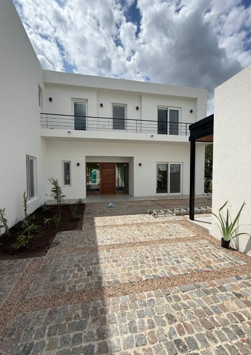
Casa en Estancias del Pilar
Vivienda, barrio Golf
Pilar y Zona Norte
Diseño tu casa, dirijo la obra y la construimos con el Estudio Virasoro, que lleva más de 500 casas hechas en barrios cerrados de la zona.

Diseño y obra en las mismas manos, así el proyecto y el presupuesto no se separan.
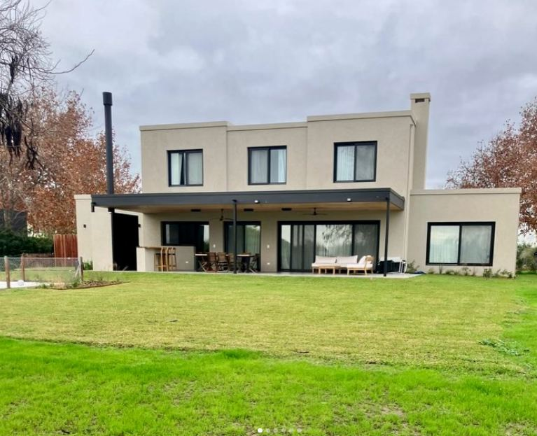
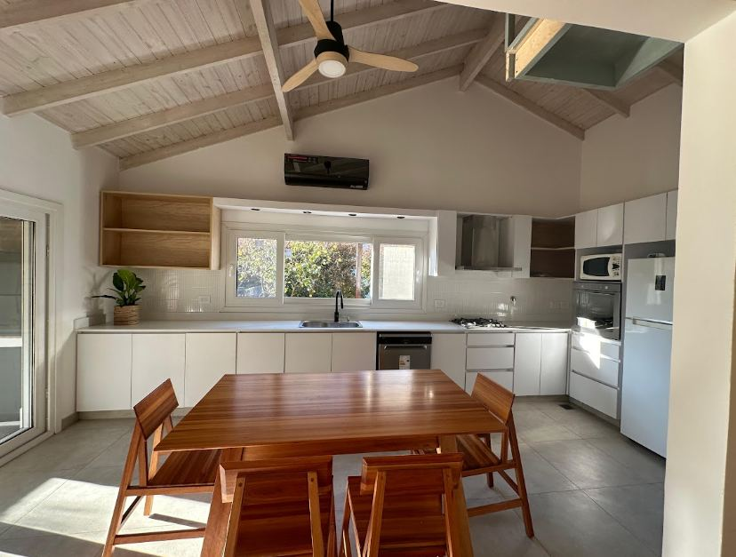
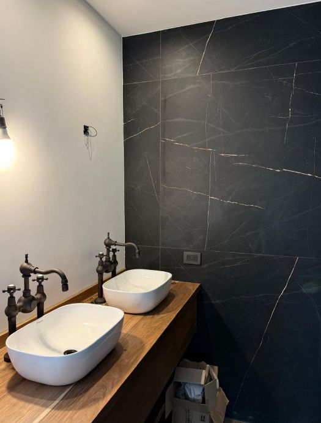
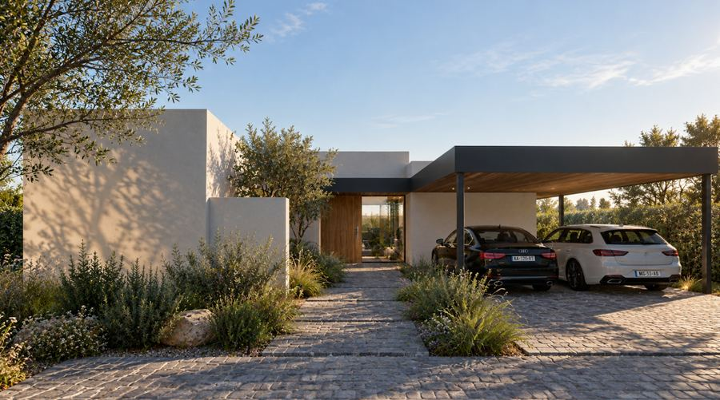
Estudio Virasoro, desde 1912
Mi papá y mi tío construyeron más de 500 casas en Pilar, más de 50 solo en Estancias del Pilar. Yo sumo el diseño contemporáneo, los modelos 3D y los renders. Ellos, décadas de obra.

Vivienda, barrio Golf

Interiores
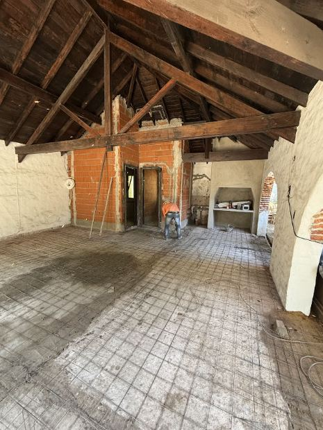
Reforma
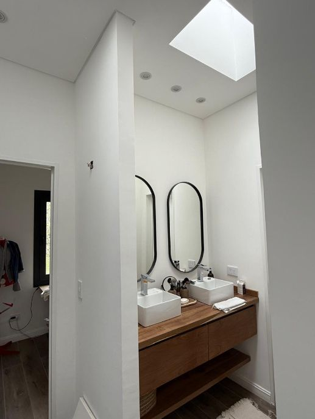
Interiores

Muebles a medida
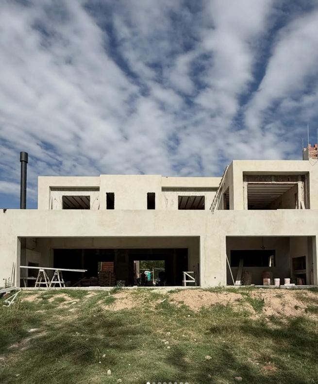
En obra
Barrios cerrados de Pilar y Zona Norte, donde el estudio construye hace décadas.
Desde casas de campo hasta casas modernas. El estilo sale de tu terreno y de cómo vivís.
Sí. Trabajo con modelos 3D y renders, así recorrés la casa antes de empezar la obra.
Depende de los metros, las terminaciones y el barrio. Con tu lote y tu idea te paso un presupuesto.
Sí: cocinas, baños, quinchos y muebles a medida, en casas habitadas.
Planos y renders para que la veas antes de poner un ladrillo.
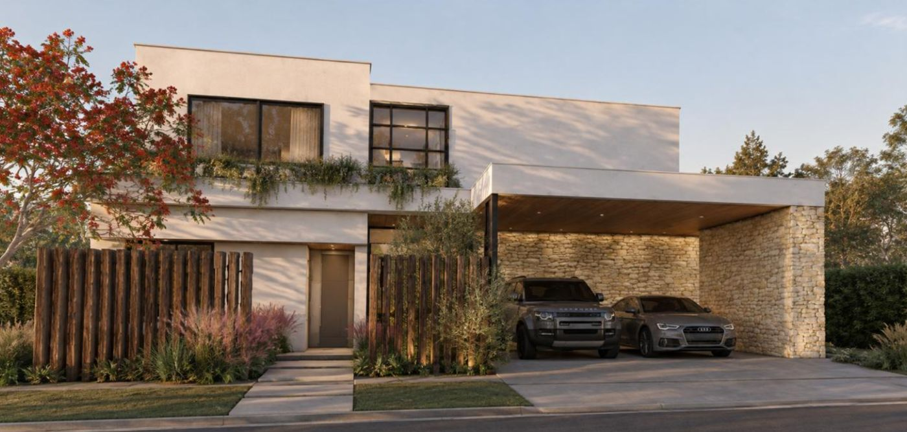
Dirijo la obra con mi papá, con el mismo equipo de siempre.
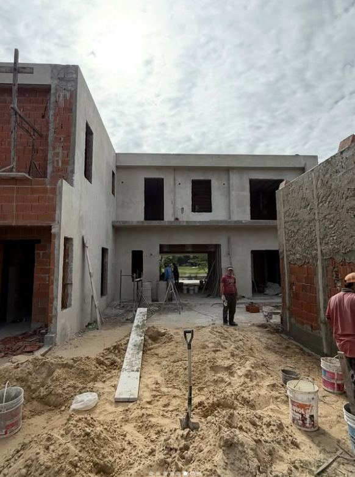
Terminaciones, paisajismo de acceso y la casa lista para mudarte.
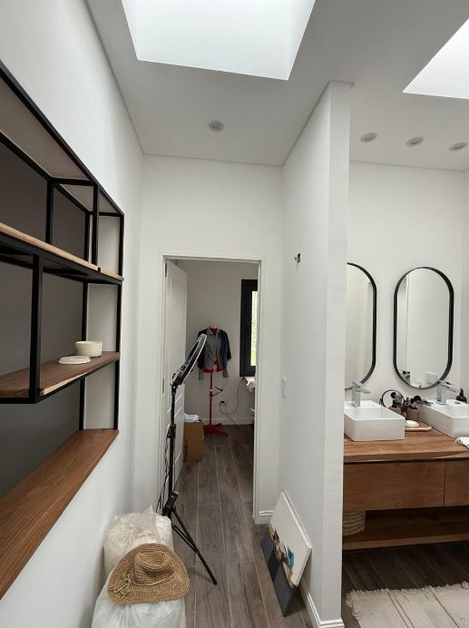
Decime en qué barrio está tu lote y qué casa te imaginás. Te respondo yo.
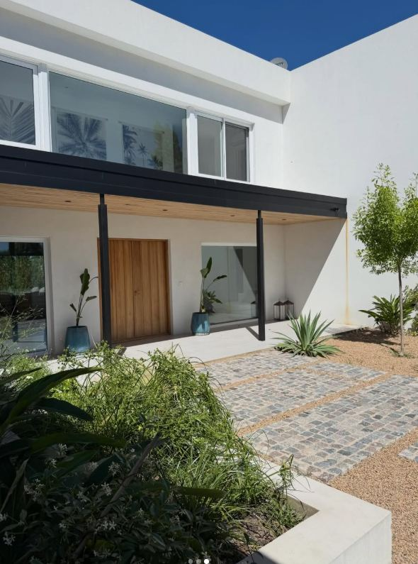